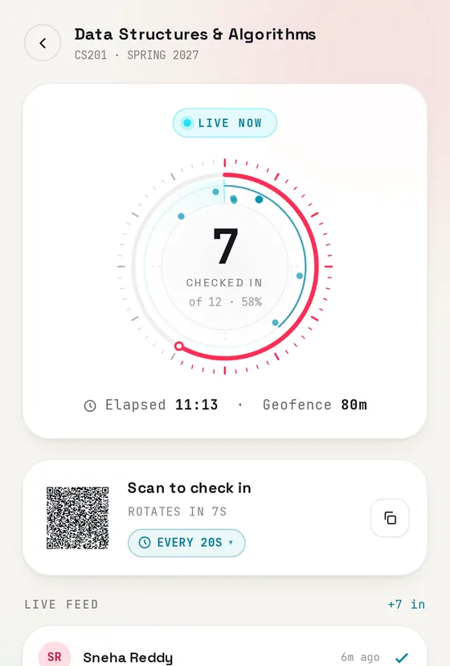
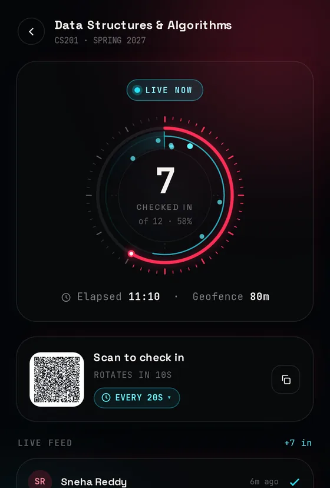

01Live
Kehai Engine気配 — a sense of presence
Attendance where checking in needs you to actually be in the room: a rotating signed QR code plus a location check.
- Started as a campus club's recruitment task, then kept growing
- 185 server tests and 56 layout tests
- Installable phone app in English and Japanese


